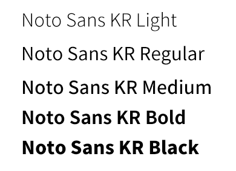

Style
#Brightly
#Look full
- #쨍하게
- #바로 알아볼 수 있게
- #가득차게
Font
- Noto Sans KR
- 
Color
-
#e6e6e6
-
#fd8200
-
#6b3802
메인 색상으로 오렌지를 골라
오렌지계열의 다른 색상을
사용해 통일감을 주며,
밋밋해 보일 수 있는 홈페이지의
포인트 컬러로 사용하였다.
Realization
제가 만든 웹사이트는 홈페이지 구조를 모아놓은 사이트에서 하나를 골라
글루온이라는 광고,홍보사이트 내용을 넣은 홈페이지 입니다.
처음으로 혼자 만든 웹사이트이며, 투박한 면들이 보여 아쉬움이 많이 남지만,
배웠던 것들을 활용하여 혼자 만들었기에 뿌듯함도 느낀 홈페이지 입니다.
-
홈페이지 안의 위치를 보일 수 있는 MAP을 넣고싶다.
→ 카카오Developers 라는 사이트 내의 카카오맵 API를 사용하여
원하는 위치를 보일 수 있게 만들고 해결하였다. -
메인화면 글씨가 튀어나온듯 3D효과를 주고 싶다.
→ text-shadow값을 주어 그림자를 이용해 살짝 튀어나온 듯 효과를 주었다.
홈페이지 보러가기
My portfolio